11.1 Speech as Data: From Sound to Signal#
So far in this course, every model started from text: tokens, vectors, sentences, documents. But a lot of language never gets typed. It is spoken in meetings, phone calls, lectures, podcasts, and voice messages. This week asks:
How does speech become data that a computer can work with, and what makes it different from text?
By the end of these notes you should be able to:
describe the path from a speaker’s idea to a recording, and where computers enter that path
explain the difference between phonetics and phonology, and between phones and phonemes
explain why spelling is an unreliable guide to pronunciation
read the axes of a waveform and a spectrogram
explain what a sampling rate is and why speech models usually expect 16,000 samples per second
explain why speech has no neat gaps between words
Reading 11.2 then uses these ideas to explain how speech recognizers work and how we measure their mistakes.
1. Why Speech Is Different#
Note
Connecting the dots. You know: how to tokenize, represent, and classify text. New problem: speech arrives as sound, not as tokens. Next: how sound becomes numbers, and why those numbers are harder to read than text.
Text comes with helpful structure already built in. Words are separated by spaces, letters are discrete symbols, and the same word is spelled the same way every time. Speech has none of these gifts:
No spaces. People do not pause between words. The pauses you hear are mostly created by your brain.
No fixed symbols. The “same” sound is different every time it is spoken, by every speaker, in every room.
A lot of data. One second of ordinary recorded speech is 16,000 numbers (Section 4). A short sentence of text is a few dozen characters.
A speech recognizer turns this stream of numbers back into text. Once it does, everything from earlier weeks applies: you can run sentiment analysis on call-center transcripts, topic models on meeting notes, or retrieval over recorded lectures. That is why speech belongs in an NLP course.
2. The Speech Chain#
Note
Connecting the dots. You know: text is produced by a writer and read by a reader. New problem: spoken language passes through the body and the air. Next: the speech chain, a map of that path, and where a computer can listen in.
The speech chain follows a message from the speaker’s brain to the listener’s brain [DP93].

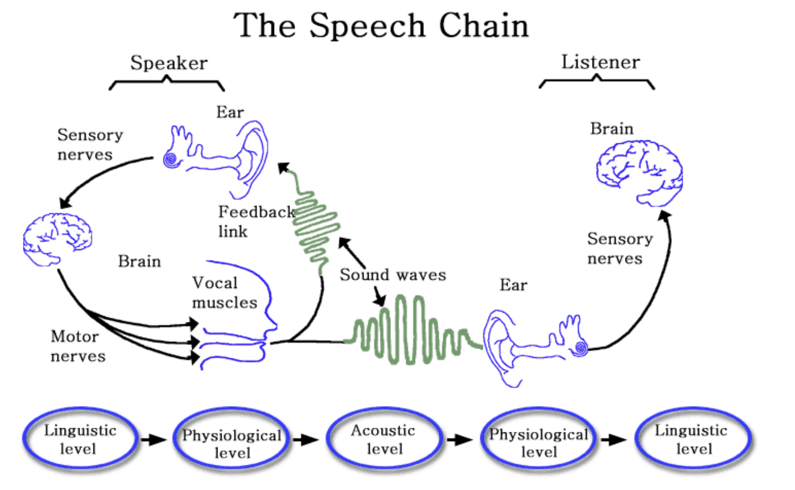
Fig. 24 The speech chain: linguistic, physiological, and acoustic levels connect a speaker and a listener. Concept from Denes and Pinson, The Speech Chain. Image source: ResearchGate.#
Each level has a counterpart in computing:
Level |
What happens |
Where computers come in |
|---|---|---|
Linguistic (speaker) |
An idea becomes words, then a plan of sounds, stress, and timing. |
Text-to-speech starts here: it must decide how text should sound. |
Physiological (speaker) |
Lungs push air; vocal folds, tongue, jaw, and lips shape it. |
Every body and every speaking habit is different. This is where accents, age, speed, and voice quality come from. |
Acoustic |
The shaped air travels as a pressure wave. |
A microphone records the wave. Noise, echo, and distance change it on the way. |
Physiological (listener) |
The ear turns pressure into nerve signals and is more sensitive to some frequencies than others. |
Speech features copy some of the ear’s habits, such as the Mel scale (Section 5). |
Linguistic (listener) |
The brain recognizes words, using context to fill gaps. |
A speech recognizer plays this role, and it also relies on context (Reading 11.2). |
The feedback link matters too: speakers hear themselves and adjust. That is one reason people speak more loudly in noisy rooms, which in turn changes how their speech sounds to a recognizer.
3. Sounds and Letters#
Note
Connecting the dots. You know: in Module 2, tokenization depended on spelling. New problem: spelling and sound do not match one to one. Next: the units linguists use to describe sounds.
Phonetics and phonology#
Phonetics is the study of speech sounds: how they are produced (articulatory phonetics), how they travel as sound (acoustic phonetics), and how the ear and brain perceive them (auditory phonetics) [JM26d].
Phonology is the study of a language’s sound system: which sounds a language treats as different, how they may combine, and the rules that link a word’s mental form to its actual pronunciation.
Put simply: phonetics describes what you can measure in the air; phonology describes what speakers of a language treat as “the same sound”.
Phones and phonemes#
A phone is a speech sound as it is actually produced. A phoneme is a sound category that a language uses to tell words apart. You can test for phonemes with minimal pairs: pat and bat differ only in their first sound, and they mean different things, so /p/ and /b/ are different phonemes in English. (Phonemes are written between slashes, phones between square brackets.)
One phoneme can be pronounced as several phones. In American English, the /t/ phoneme sounds different in each of these words:
Word |
How the t sounds |
|---|---|
tall |
with a small puff of air, written [tʰ] |
stop |
without the puff of air, [t] |
later |
a quick tap that sounds close to a d, [ɾ] |
train |
often close to the ch in chain |
patience |
not a t at all: it sounds like sh |
English speakers usually do not notice these differences, because they all count as “the same sound” in English. Which differences count depends on the language. English treats [l] and [r] as different phonemes (light and right are different words), while Japanese does not, so Japanese learners of English often find the two hard to tell apart.
Spelling is an unreliable guide#
English spelling makes the gap between letters and sounds especially wide [JM26d]:
One letter, many sounds. The letter a in ball, sand, and make; the letter t in the table above.
Several letters, one sound. sh in shoot, ch in character (a k sound), th in Thomas (a t sound) and in either, ph in physics, gh in rough (both an f sound), oa in coat, ea in deal.
One letter, two sounds, in the same word. In xerox, the first x sounds like z and the last like ks.
Some languages, such as Spanish, have much more regular spelling. Even then, spelling does not record everything: speed, accent, stress, and the neighboring sounds all change how a word is said.
Why this matters for speech technology: a speech recognizer has to learn the mapping between sounds and spelling from examples, including all the irregular cases. Older systems used a hand-built pronunciation dictionary for this. Modern systems learn it directly from large amounts of audio paired with transcripts (Reading 11.2). Text-to-speech faces the same problem in reverse.
The International Phonetic Alphabet#
The International Phonetic Alphabet (IPA), first developed in 1888, is a standard set of symbols for transcribing the sounds of the world’s languages, with the goal of one symbol per sound [JM26d]. You see it in dictionaries, for example /ˈwɔːtər/ for water.
IPA is a precise notation, but it has limits worth knowing:
Knowing the symbols does not mean you can produce or hear every sound. That takes training and practice.
A transcription can be broad (phonemes only) or narrow (with details such as the puff of air in [tʰ]). Two careful transcribers can write the same word differently.
Different accents pronounce the same word differently, so there is no single “correct” transcription for many words.
You do not need to memorize IPA for this course. The idea to remember is that linguists need a separate notation for sounds precisely because ordinary spelling does not do the job.
4. Sound as a Signal#
Note
Connecting the dots. You know: what speech sounds are. New problem: a microphone does not record “sounds”, it records a changing air pressure. Next: how to read a sound wave and how it becomes numbers.
Reading a waveform#
A waveform shows how air pressure changes over time at the microphone [JM26d]:
The horizontal axis is time.
The vertical axis is amplitude: how far the air pressure is above or below normal. Bigger swings mean more energy, which we hear as louder sound.
Frequency is how many times per second the wave repeats, measured in hertz (Hz). We hear higher frequency as higher pitch.

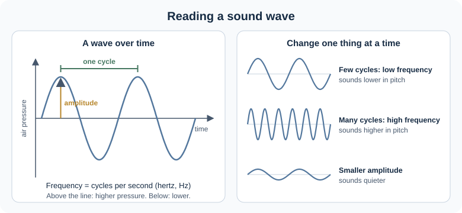
Fig. 25 Amplitude, cycles, and frequency. Pitch and loudness are how we perceive frequency and amplitude; the relationship is close but not exactly linear.#
Real speech is not a neat sine wave. When the vocal folds vibrate (in vowels and other voiced sounds), the wave repeats in a regular pattern; the rate of that vibration is the fundamental frequency, or F0. For example, a vowel whose wave repeats 10 times in 38.75 milliseconds has an F0 of about 258 Hz [JM26d] (§15.4.3). Sounds like s and f have no repeating pattern at all: they are noise.
Loudness is usually measured on the decibel (dB) scale, a logarithmic scale that compares a sound’s intensity to the quietest sound people can hear. Normal conversation is roughly 60 dB (Section 6).
Optional: more wave physics
Sound is a pressure wave: air molecules are pushed together (compression) and pulled apart (rarefaction) as the wave passes. A few properties of waves explain everyday problems in speech technology:
Superposition: when two sounds overlap, their pressure changes simply add up. A recording of two people talking at once, or a voice over traffic noise, is the sum of both. Undoing that sum is hard, which is why overlapping speech is one of the hardest cases for recognizers.
Reflection: sound bounces off walls, like light off a mirror. Reflections arriving a little late create echo and reverberation. A microphone across a large room picks up many reflections, which is one reason distant microphones give worse transcripts.
Refraction: sound changes direction when it moves between materials or through air at different temperatures.
Interference: two similar waves can strengthen each other (constructive) or cancel each other (destructive). The “beats” you hear when two instruments are slightly out of tune are an example.
Wavelength: the distance between two neighboring peaks in space. It equals the speed of sound (about 343 meters per second in room-temperature air) divided by the frequency, so a 100 Hz sound has a wavelength of about 3.4 meters.
A bit of history: the idea that sound travels in waves is old. The Greek philosopher Chrysippus (about 240 BCE), the Roman architect Vitruvius (about 25 BCE), and the Roman philosopher Boethius (480 to 524 CE) each described sound as moving like a wave.
From a smooth wave to numbers: sampling#
A microphone turns air pressure into an electrical signal that changes smoothly over time. A computer cannot store “smoothly”, so it samples the signal: it measures the amplitude many times per second and stores each measurement as a number [JM26d] (§15.4.2).

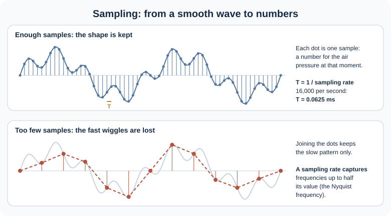
Fig. 26 Sampling. With enough samples per second, the shape of the wave is kept. With too few, fast changes (high frequencies) are lost.#
Three numbers describe digital audio:
Sampling rate: how many samples per second. A sampling rate can only capture frequencies up to half its value, called the Nyquist frequency, because each cycle of a wave needs at least two samples.
Bit depth: how precisely each sample is stored. With 16 bits, each sample is a whole number from −32,768 to 32,767. Rounding the real value to a whole number is called quantization.
Channels: one (mono) or two (stereo). Speech recognizers usually use mono.
Common sampling rates and what they keep:
Sampling rate |
Highest frequency kept |
Where you see it |
|---|---|---|
8,000 Hz |
about 4,000 Hz |
telephone audio |
16,000 Hz |
about 8,000 Hz |
most speech recognition models |
22,050 Hz |
about 11,000 Hz |
the default in some Python audio libraries, such as librosa |
44,100 Hz |
about 22,000 Hz |
music (CD quality) |
Most of the information in speech lies below about 8,000 Hz, so 16,000 Hz is the usual choice for speech models [JM26d]. Models are trained at one sampling rate and expect the same rate at input. Audio recorded at another rate should be resampled first; many libraries do this for you, but it is worth checking.
Check the arithmetic. A 5-second clip at 16,000 Hz holds 5 × 16,000 = 80,000 samples. At 16 bits (2 bytes) per sample, that is 160,000 bytes, about 160 KB, for 5 seconds of mono audio.
5. Spectrograms: Seeing Frequencies Over Time#
Note
Connecting the dots. You know: a waveform shows amplitude over time. New problem: it hides which frequencies are present, and that is what tells sounds apart. Next: the spectrogram, and the version of it that modern models read.
A key idea from signal processing (Fourier analysis) is that any complex wave can be described as a mix of simple waves at different frequencies. A spectrogram shows that mix changing over time [JM26d] (§15.4.5):
The horizontal axis is time, as in a waveform.
The vertical axis is frequency (Hz), low at the bottom and high at the top.
Darkness (or color, in some tools) shows how much energy there is at that frequency at that moment.

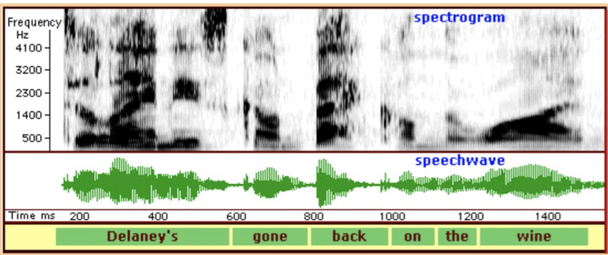
Fig. 27 Spectrogram (top) and waveform (bottom) of “Delaney’s gone back on the wine”. Source: Australian Linguistics, Acoustic analysis.#
Things to notice in this figure:
Vowels show dark horizontal bands called formants. These are frequencies that the shape of the mouth and throat makes stronger. The positions of the first two formants (F1 and F2) are the main clue to which vowel was said [JM26d]. You cannot reliably identify a vowel from the shape of its waveform alone, but you often can from its formants.
Hissing sounds, like the z sound at the end of Delaney’s, show up as fuzzy energy spread across high frequencies.
Stops, like the b and k in back, show up as a short near-silent gap (the lips or tongue block the air) followed by a burst.
There are no gaps between words. The white gaps you can see come from stop consonants, not from word boundaries. The word labels at the bottom were added by a person.
That last point is a big one for speech recognition. Neighboring sounds also blend into each other, a process called coarticulation: your mouth starts moving toward the next sound before the current one is finished. For example, the k in key and the k in coo are made at slightly different places in the mouth, because the tongue is already preparing the vowel. So a sound’s acoustic shape depends on its neighbors, and a recognizer cannot simply cut the signal into word-sized pieces.
The Mel scale#
Human hearing does not treat all frequencies equally. We notice small changes between low frequencies much more easily than the same changes between high frequencies. Roughly, pitch perception tracks frequency linearly up to about 1,000 Hz and logarithmically above that [JM26d] (§15.4.3). The Mel scale captures this: equal steps in mels sound like equal steps in pitch.

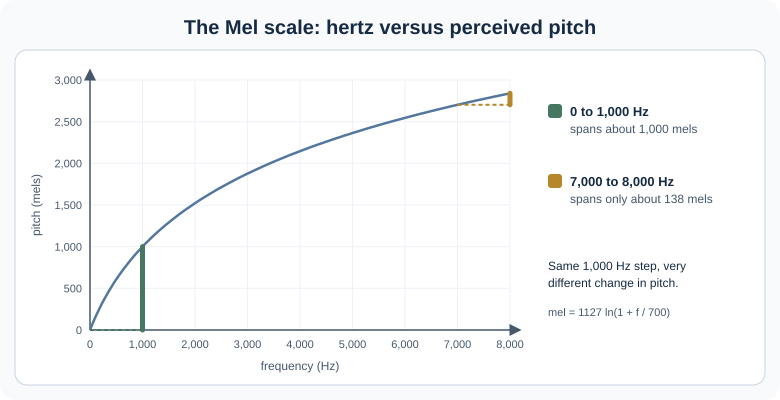
Fig. 28 The Mel scale, computed with mel = 1127 ln(1 + f / 700). Speech features spend more detail on low frequencies, where listeners (and vowel formants) need it.#
What modern models actually read: the log-Mel spectrogram#
Speech recognizers do not read raw spectrograms. They read a version that is shaped like human hearing [JM26d] (§15.5):
![Main path, left to right. Waveform at 16,000 samples per second, then frames of 25 milliseconds taken every 10 milliseconds, then a Fourier transform giving energy at each frequency, then a Mel filter bank and a log, giving a log-Mel spectrogram with 80 to 128 numbers per frame, the input to Whisper and most modern speech recognizers. Optional classic path. An inverse transform, in practice a discrete cosine transform, turns each log-Mel frame into MFCCs, 39 numbers per frame, used by older systems. Separate path. Self-supervised models such as wav2vec 2.0 and HuBERT learn their own features straight from the waveform.](../_images/speech-features-pipeline.svg)
Fig. 29 From waveform to model input. The main path ends at the log-Mel spectrogram. MFCCs are an optional extra step used mainly by older systems.#
Cut the audio into frames. Speech changes quickly, but over a very short window it is roughly steady. Typical frames are 25 milliseconds long, with a new frame every 10 milliseconds, so frames overlap.
Measure frequencies in each frame with a Fourier transform (computed with the fast algorithm called the FFT).
Group the frequencies on the Mel scale with a set of filters (a filter bank) that are narrow at low frequencies and wide at high ones.
Take the logarithm, because we also hear loudness on a roughly logarithmic scale. The log also reduces the effect of a speaker moving closer to or farther from the microphone.
The result, the log-Mel spectrogram, is a grid: one column per 10 milliseconds, with 80 or 128 numbers per column. A frame every 10 ms means 100 frames per second, so a 30-second clip becomes 3,000 columns [JM26d] (§16.3.1). This grid plays the same role for speech that a sequence of token embeddings played for text in Week 10.
Optional: MFCCs, the classic speech features
Before neural networks took over, most recognizers used MFCCs (Mel-frequency cepstral coefficients), and you will still see them in tutorials and lightweight systems [JM26d] (§15.6).
MFCCs take one more step after the log-Mel spectrum. A spoken sound mixes two things: the source (the vibration of the vocal folds, which sets the pitch) and the filter (the shape of the mouth and throat, which decides which sound it is). For recognizing words, the filter matters most. The cepstrum, informally “the spectrum of the log spectrum”, helps separate the two: it is computed with an inverse transform of the log spectrum, in practice a discrete cosine transform (DCT). Keeping only the first coefficients keeps mostly the filter information.
A standard MFCC vector has 39 numbers per frame: 12 cepstral coefficients plus 1 energy value (13), the change of each from frame to frame (13 “delta” features), and the change of the change (13 “double delta” features).
The mel value for a frequency f in hertz is
Modern neural recognizers usually stop at the log-Mel spectrogram and let the network learn the rest. Self-supervised models such as wav2vec 2.0 go further and learn their own features from the raw waveform.
6. What Speech Sounds Look Like, and How We Hear Them#
Note
Connecting the dots. You know: how to read a waveform and a spectrogram. New problem: what do different kinds of sounds look like, and which of them are fragile? Next: sound classes and the limits of hearing.
Sound classes on a waveform#
Different classes of sounds leave different traces. The figure below shows the start of the same phrase, “Delaney’s gone”, with each sound labeled.

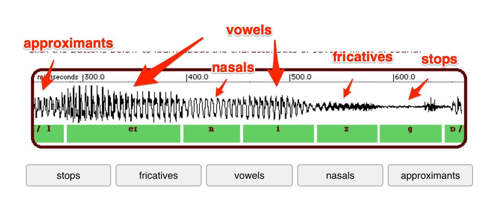
Fig. 30 Sound classes in a waveform. Source: Australian Linguistics, Acoustic analysis.#
These patterns are useful tendencies, not rules. Fast or casual speech, background noise, and differences between speakers all blur them [JM26d] (§15.4.4).
Class |
Examples |
How it tends to look |
|---|---|---|
Vowels |
the vowels in say, see, saw |
long, loud, with regular repeating cycles from the vocal folds; told apart by their formants |
Nasals |
m, n, ng |
regular like vowels but weaker, because air leaves through the nose |
Approximants |
l, r, w, y |
vowel-like and usually a bit weaker; the tongue or lips narrow the airway, but not enough to make hissing noise |
Fricatives |
s, z, f, v, sh, h |
irregular noise from air forced through a narrow gap; voiced ones such as z and v mix noise with voicing |
Stops |
p, t, k, b, d, g |
near-silence while the airway is closed, then a short burst when it opens |
The range of hearing#
Humans hear frequencies from about 20 Hz to 20,000 Hz, and intensities from about 0 dB (the threshold of hearing) to about 120 to 130 dB, where sound becomes painful. Everyday conversation sits in the middle of this range.

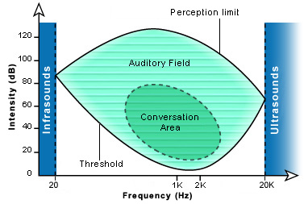
Fig. 31 The human auditory field and the area used by conversation. Source: Cochlea, Human auditory range.#
Optional: hearing range in animals, and how loud is too loud
Other animals hear different ranges: elephants and mole rats can hear infrasounds below 20 Hz, while bats and dolphins hear ultrasounds far above 20,000 Hz.

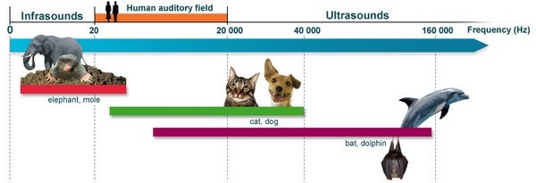
Sound levels range from a whisper (about 40 dB) and normal voice (about 60 dB) to a pneumatic drill (about 110 dB) and a plane taking off (about 130 dB). Long exposure above about 80 to 90 dB can damage hearing.

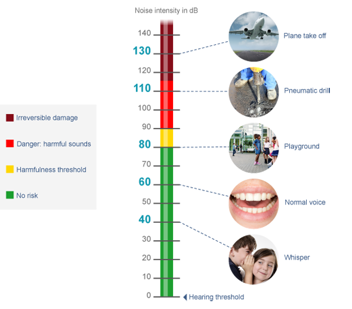
Source for both images: Cochlea, Human auditory range.
Why consonants are fragile#
Within speech, the energy is not spread evenly. Vowels carry most of their energy at roughly 250 to 2,000 Hz and are relatively loud. Voiceless consonants such as s, f, and t are much quieter and carry their energy higher, roughly 2,000 to 8,000 Hz.

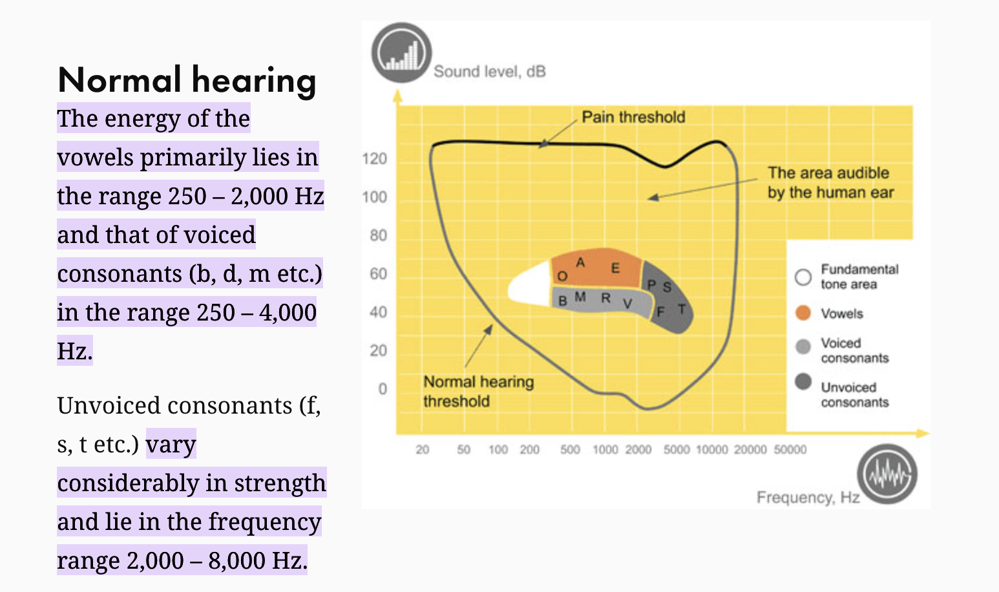
Fig. 32 Where speech sounds lie in frequency and level, for normal hearing. Source: Ecophon, Generating and understanding speech.#
This explains several practical problems:
Phone calls. Telephone audio keeps only frequencies up to about 4,000 Hz (Section 4), so much of the energy of s and f is cut off. That is why “s as in Sam, f as in Frank” is a familiar phone habit, and why recognizers trained on 16,000 Hz microphone audio often do worse on phone audio.
Noise. Quiet, high-frequency consonants are the first sounds to be covered by background noise.
Hearing loss. Hearing loss often starts at high frequencies, so people lose consonants before vowels: they can hear that someone is talking but cannot make out the words (see the figure below). Automatic captions are an important accessibility tool for exactly this reason, which is one more reason transcript quality matters.

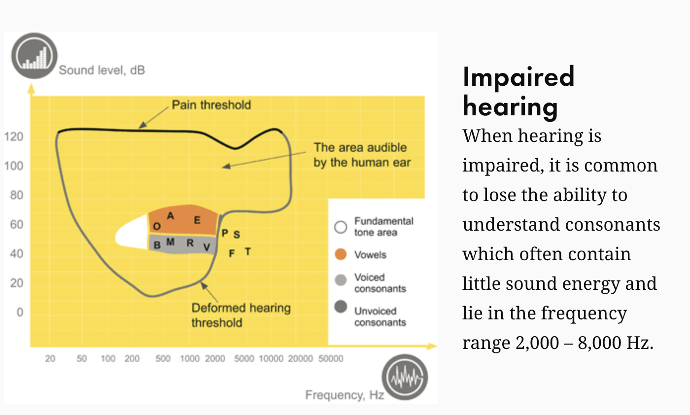
Fig. 33 With high-frequency hearing loss, voiceless consonants fall below the hearing threshold. Source: Ecophon.#
7. Key Takeaways and Knowledge Check#
Waveform |
Spectrogram |
Log-Mel spectrogram |
|
|---|---|---|---|
Horizontal axis |
time |
time |
time (one column per 10 ms frame) |
Vertical axis |
air pressure (amplitude) |
frequency (Hz) |
Mel frequency bands (80 to 128) |
Shows best |
loudness, voicing, silences, bursts |
formants, hissing noise, how sounds change |
the same, shaped like human hearing |
Typical use |
quick inspection, editing audio |
phonetic analysis |
input to modern speech recognizers |
The speech chain links a speaker and a listener through linguistic, physiological, and acoustic levels. Variation enters at every level.
Phonemes are sound categories a language uses to tell words apart; phones are the actual sounds. Spelling does not map neatly onto either.
Digital audio is a list of samples. A sampling rate captures frequencies up to half its value; speech models usually expect 16,000 Hz.
A spectrogram shows which frequencies are present over time. Formants identify vowels.
Speech has no gaps between words, and neighboring sounds blend (coarticulation).
Modern recognizers read log-Mel spectrograms; MFCCs are the older, more compressed alternative.
Check your reasoning#
A podcast clip is 10 seconds long and sampled at 16,000 Hz. How many samples does it contain, and what is the highest frequency it can represent?
You want to find the moment a speaker moves from the vowel in see to the vowel in saw. Would you look at the waveform or the spectrogram, and what would you look for?
The letter t is pronounced differently in tall, later, and patience. Why does this matter for a system that turns speech into written text?
A classmate says: “There is a white gap in the spectrogram right before back, so that must be the boundary between gone and back.” Is a gap a reliable sign of a word boundary? Explain.
A recognizer confuses “Sam” and “fan” much more often on phone calls than on laptop recordings. Use what you know about sampling rates and consonants to suggest why.
Suggested reasoning
10 × 16,000 = 160,000 samples. The highest frequency is half the sampling rate: 8,000 Hz.
The spectrogram. Vowels are told apart mainly by their formants, so look for the moment the dark formant bands move to new positions. The waveform only shows a regular repeating pattern in both vowels.
One letter stands for several sounds, and the same sound can be spelled in several ways. The system cannot simply map each sound to a letter; it must learn spelling from many examples and use context, such as which words exist and which word sequences are likely.
No. A gap like that usually comes from a stop consonant, when the lips or tongue briefly block the air (here, the b of back). Gaps also appear inside words, and many word boundaries have no gap at all because speech is continuous.
Phone audio is typically sampled at 8,000 Hz, so it keeps only frequencies up to about 4,000 Hz. Much of the energy of s and f lies above that, so the cues that separate “Sam” from “fan” are partly lost. A recognizer trained mostly on 16,000 Hz audio also has less practice with this kind of signal.
Reading 11.2 picks up from here: given a log-Mel spectrogram, how does a model produce text, and how do we measure its mistakes?
References#
Main source for phonetics, digital audio, spectrograms, formants, and speech features: [JM26d] (Chapter 15, “Phonetics and Speech Feature Extraction”). Speech chain: [DP93].
Image credits are given in each caption. The figures for reading a sound wave, sampling, the Mel scale, and the feature pipeline are original drawings for this course.
Optional deeper reading: Jurafsky and Martin, Chapter 15, §§15.1, 15.4, and 15.5, available free at https://web.stanford.edu/~jurafsky/slp3/. These sections go further into articulation and signal processing than these notes; the equations are not required.